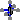
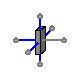

Table of Contents
- User's Guide
- Blocks
- Conditions
- Assemblies
- Regions
- Subregions
- Phases
- Species
- Chemistry
- Connectors
- Characteristics
- Units
- Quantities
- Utilities
- Icons
Download
- Latest version (**Empty; please check back soon or contact kdavies4 at gmail.com.)
FCSys.Regions.CaFPs
Cathode flow platesInformation
Extends from Modelica.Icons.Package (Icon for standard packages).Package Content
| Name | Description |
|---|---|
|  CaFP | Cathode flow plate |
 FCSys.Regions.CaFPs.CaFP
Cathode flow plate
Information
This model represents the cathode flow plate of a PEMFC.
The x axis extends from the anode to the cathode.
Fluid is considered to travel
in the y direction, with the associated length factor (ky) greater than one (by default)
to represent a serpentine channel.
The model is
bidirectional, meaning that either yNegative or yPositive can be
used as the inlet. By default, the cross-sectional area in the yz plane is 50 cm2.
The solid and the fluid phases exist in the same subregions even though a typical flow plate is impermeable to the fluid (except for the channel). This has some important implications:
- The fluid species are exposed at the positive x-axis connector (
xNegative). They should be left disconnected there. - The viscous forces are modeled not as shear boundary forces, but as exchange forces with the internal solid. Therefore, the pressure drop across the channel is governed primarily by the mobility of the fluid species (μ) and the coupling factors for exchange (e.g., kcommon), not by the fluidity (η), translational Nusselt number (NuΦ), and transport factors (k).
- The x axis-component of the transport factor (k) for the gas and the liquid should
generally be greater than one because the transport distance into/out of the GDL is less that half the thickness of the flow plate.
As an approximation, it should be equal to the product of two ratios:
- the thickness of the flow plate to the depth of the channels
- the area of the valleys in the yz plane to the product of the total area of the flow plate in the yz plane (land + valleys) and the fraction of the total volume avaialable for the fluid (ε)
See Species.'C+'.Graphite.Fixed
regarding the default specific heat capacity. The default thermal resistivity
of the carbon (θ = U.m*U.K/(95*U.W)) and the
electrical conductivity (σ = U.S/(1.470e-3*U.cm))
are that of Entegris/Poco Graphite AXF-5Q
[Entegris2012].
There is additional data in the
text layer of the AnFP model.
For more information, please see the Region model.
Extends from Region (Base model for a 3D array of subregions).
Parameters
| Type | Name | Default | Description |
|---|---|---|---|
| replaceable model Subregion | FCSys.Subregions.SubregionNo… | Base subregion model | |
| Length | D | 1.5*U.mm | Hydraulic diameter of the channel [L] |
| Geometry | |||
| Length | L_x[:] | {8}*U.mm | Lengths along the x axis [L] |
| Length | L_y[:] | {8}*U.cm | Lengths along the y axis [L] |
| Length | L_z[:] | {6.25}*U.cm | Lengths across the z axis [L] |
| NumberAbsolute | epsilon | 0.0625 | Fraction of volume for the fluid [1] |
| Assumptions | |||
| Included transport axes | |||
| Boolean | inclTransX | true | X |
| Boolean | inclTransY | true | Y |
| Boolean | inclTransZ | false | Z |
Connectors
| Type | Name | Description |
|---|---|---|
| replaceable model Subregion | Base subregion model | |
| BoundaryBus | xNegative[n_y, n_z] | Negative boundary along the x axis |
| BoundaryBus | xPositive[n_y, n_z] | Positive boundary along the x axis |
| BoundaryBus | yNegative[n_x, n_z] | Negative boundary along the y axis |
| BoundaryBus | yPositive[n_x, n_z] | Positive boundary along the y axis |
| BoundaryBus | zNegative[n_x, n_y] | Negative boundary along the z axis |
| BoundaryBus | zPositive[n_x, n_y] | Positive boundary along the z axis |
Modelica definition
model CaFP "Cathode flow plate" import Modelica.Constants.inf; // extends FCSys.Icons.Names.Top4; extends Region( L_x={8}*U.mm, L_y={8}*U.cm, L_z={6.25}*U.cm, final inclTransX=true, final inclTransY=true, inclTransZ=false, redeclare replaceable model Subregion = FCSys.Subregions.SubregionNoIonomer ( common(k_Phi={100,inf,100}), gasLiq(k_Phi={inf,1e4,inf},k_Q=inf), gas( common(k_Phi={inf,inf,inf}), k={2/epsilon,11,Modelica.Constants.eps}, inclH2O=true, inclN2=true, inclO2=true, H2O( upstreamX=false, Nu_Phi={4,16*A[Axis.z]*epsilon/D^2,4}, zeta=100*Characteristics.H2O.Gas.zeta(), T(stateSelect=StateSelect.always)), N2( upstreamX=false, Nu_Phi={4,16*A[Axis.z]*epsilon/D^2,4}, zeta=100*Characteristics.N2.Gas.zeta(), initEnergy=Init.none, I(each stateSelect=StateSelect.always, each fixed=true)), O2( upstreamX=false, Nu_Phi={4,16*A[Axis.z]*epsilon/D^2,4}, zeta=100*Characteristics.O2.Gas.zeta(), initEnergy=Init.none)), graphite( 'inclC+'=true, 'incle-'=true, 'C+'(theta=U.m*U.K/(95*U.W),epsilon=1 - epsilon), 'e-'(sigma=U.S/(1.470e-3*U.cm))), liquid(inclH2O=true, H2O( upstreamX=false, Nu_Phi={4,16*A[Axis.z]*epsilon/D^2,4}, epsilon_IC=1e-6)), capillaryPressure(theta=90*U.degree))); // **option to exclude capillary pressure (if so, use in AnFP too)? parameter Q.NumberAbsolute epsilon(nominal=1) = 0.0625 "Fraction of volume for the fluid"; parameter Q.Length D=1.5*U.mm "Hydraulic diameter of the channel"; protected Q.Velocity phi_states_H2O[:, :, :]( each stateSelect=StateSelect.always, each start=0, each fixed=true) = subregions[:, 2:n_y, :].gas.H2O.phi[2] if n_y > 1 "Forced states for H2O"; Q.Velocity phi_states_O2[:, :, :]( each stateSelect=StateSelect.always, each start=0, each fixed=true) = subregions[:, 2:n_y, :].gas.O2.phi[2] if n_y > 1 "Forced states for O2"; // Note: These variables avoid dynamic state selection in Dymola 2014. outer Conditions.Environment environment "Environmental conditions"; // See AnFPs.AnFP for data on additional materials. end CaFP;